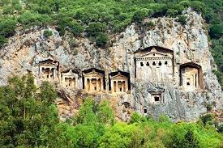
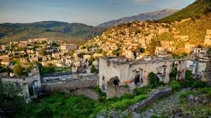

Muğla tarihi M.Ö. 3000 yıllarına kadar uzanır. İlk çağlarda bu bölgeye Karia’lılar yerleştiği için Karia adı verilmiş. İlin bilinen tarihi ise Hitit’ler ile başlar. Hitit’ler bu bölgeye Lugga derlermiş. İmparatorluğun parçalanmasından sonra Frig’ler egemen olmuş, daha sonra Lydia’lılar bölgeyi ele geçirmişler, bu arada Dor’lar ve Ion’lar da yöreye göç etmişler. Bölge M.Ö. 546 yılında Pers’lerin, M.Ö. 334 yılında (Halikarnassos/Bodrum ve civarı) Makedonya Kralı Büyük İskender’ in, M.Ö. 189 da Bergama Krallığının, M.Ö. 133 de Roma İmparatorluğu’nun, Roma’nın ikiye bölünmesiyle de, Doğu Roma İmparatorluğu’nun hakimiyetine girmiş. Türklerin eline geçmesi Uç Beylerden Menteşe Bey tarafından 1284 de gerçekleşmiş.
Bölge 1391 yılında, Yıldırım Beyazıt, tarafındarı Osmanlı topraklarına katılmış, 1402 de Timur’un hakimiyetine geçmiş, Timur bu yöreyi tekrar Menteşe Beyliği’ne vermiş, daha sonra 1425 de II Murat zamanında, Menteşe Bölgesi tümüyle Osmanlı İmparatorluğu’nun egemenliğine geçmiş. Menteşe oğulları zamanında Yunanistan, Muğla kıyıları ve adalarına çıkmış, Rodos adasını bir süre egemenlikleri altına almışlar. Bu dönemde Rodos adasına yerleşen Sait Jean şövalyeleri Osmanlılar ve Menteşe oğulları ile savaşmışlar, Bodrum kalesini de bir süre ellerinde tutmuşlardır. Ancak 1522 de Kanuni Sultan Süleyman tarafından hem Rodos adası hem de Bodrum Kalesi Osmanlı İmparatorluğu’na katılmışMuğla ilinin merkezi Menteşe Beyliği zamanında Milas’tı; Muğla, Osmanlı İmparatorluğu döneminde merkez olmuş.
“Muğla” adının nereden geldiği konusunda çeşitli söylentiler bulunur. En yaygın söylentiye göre ilin adı, Selçuklu Sultanı Kılıçarslan’ın komutanlarından “Muğlu” Beyi adından gelmekte. Büyük olasılıkla burayı Muğlu Bey fethettiği için bu komutanın adı verilmiş, “Muğlu” zamanla Muğla’ya dönüşmüş. 1889 Aydın Vilayet salnamesinde rastlanan “Mobella” adı ise kentin ortaçağdaki adıdır.
Kurtuluş savaşı sırasında, Muğla ve yöresini 11 Mayıs 1919 tarihinden itibaren işgale başlayan İtalya, Menderes’in güneyinde filizlenen ulusal güçlerle pazarlık ve anlaşma yapmak zorunda kalmış. İtalya, Yörük Ali Efe’nin Muğla’dan , Demirci Mehmet Efe’nin de Nazilli’den yönlendirdikleri ulusal direniş çalışmaları karşısında silahlı bir çatışmayı göze alamamış. İşgal üzerine tüm Anadolu’da mitinglerin düzenlenip direnme örgütlerinin kurulması için İzmir’den gelen telgrafa, Muğlalı Kocahan Mitingi’ni düzenleyerek cevap vermiş. Aldığı kararların ardından Vatan Müdafaa Cemiyeti, Serdengeçtiler Müfrezesi, Muğla Kuvayi Milliyesi gibi direniş komiteleri kurulmuş. 1920’de Ankara’da açılan 1. Dönem BMM’nde 6 milletvekiliyle ulusal mücadelede üzerine düşeni layıkıyla yapan Muğlalı, oluşturduğu direniş gruplarında yer alan gönüllerini Yunanlılara karşı Aydın cephesine göndermiş. Ege’de 57. Tümenden kalanlarla birleşen gönüllüler, Aydın çarpışmalarında düşmana ağır kayıplar verdirmişler.
Ege illeri arasında Muğla işgal sırasında en fazla şehit veren il olmuş. İç durumun karışıklığı, Yunanlılar ve işgal ettiği yörelerde ekonomik egemenlik kurma düşüncesine dayanan İtalyan politikasını Muğla halkı işgal süresince kurnazca değerlendirmiş, iki ateş arasında kalmaktan kurtulmuş. Anadolu’daki durumun kötüye gittiğini anlayan İtalya, 2. İnönü Zaferi kazanıldıktan sonra ülkesindeki iç siyasal dalgalanmalarını öne sürerek 5 Temmuz 1921’de Muğla’dan ayrılmış. Muğla özgürlüğüne böylece kavuşmuş.
1. Kaunos Antik Kenti
2. Knidos Antik Kenti
3. Hippokome Antik Kenti
4. Zeus Karios Tapınağı
5. Letoon Antik Kenti
6. Physkos Antik Kenti
7. Hemithea Tapınağı
8. Amintas Kaya Mezarları
9. Bodrum Antik Tiyatro
10. Stratonikeia Antik Kenti
11. Idyma Antik Kenti
12. Eski Datça
13. Kameriye Adası
14. Yediler Manastırı
15. Muğla Müzes

